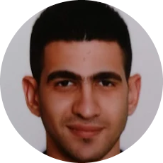

|  |
Kareem El Mattary
|
I Am Self-Motivated, Ambitious And Eager To Learn, A Responsible Individual With Strong Communication Skills And Work Ethics Besides Being Creative, Focused And Highly Determined, Willing To Take Responsibility And Work Independently. At The Same Time, Can Work Well In Teams. Looking For Both Personal And Professional Growth Makes Me Capable Of Working Confidently Under Pressure. Being Bilingual Gives Me The Chance To Function Efficiently In Both English And Arabic. My Background And Growing Up Experience Has Given Me A Deep Insight In The Culture And Society Together With A Wider Scope In The World Of Technology
| (-2014) | American Diploma For High School. |
| (2014-2018) | Arab Academy For Science Technology And Maritime Transport. (Collage Of International Transport And Logistics). |
| English | Very Good |
| Arabic | Native |
| sep.2017/oct.2017 | Training : EgyptAir Co.
● Air freight familiarization course. ● Ground services in Cairo International airport. ● Cargo handling And documentation preparing in cargo village in Cairo international airport. |
| Aug. 2017 |
● Supervising cargo ships arriving and departing . ● arrange movements of gantry cranes on ship . ● Arranging Containers On Shipping Yards . |
| Jul. 2017 |
● Operation department. ● Sales |
| Aug.2016 | ● preparing shipping Documents. ● sales and purchasing Departments. ● Accounting Department. |
● Social Work.
● Driving.